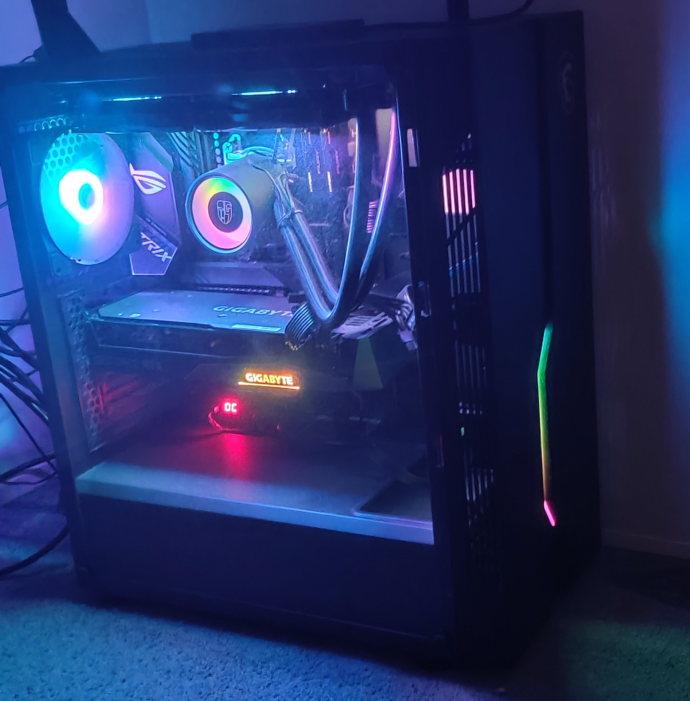
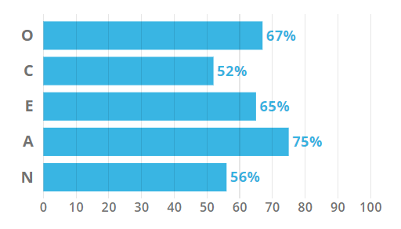

Hey! My name is Benjamin Bilotta and am currently 19 years old living in Melbourne, Victoria. I have 2 brothers, with my older brother (22) being a qualified Mechanic for BMW and my younger brother (18) taking a gap year of after he finished year 12. I also have a half-sister on my dads’ side who is married with kids… which made me an uncle at only 10 years old!
I have quite a big family which is to be expected as my nationality is Uruguayan and Italian. While I haven’t been fortunate enough to visit Italy, I did get the chance to go to Uruguay and experience life in with my, what felt like, millions of cousins in the beautiful country of Uruguay in South America.
On top of all this I have 3 pets. I've got a small cat named Sahara and 2 dogs. My first dog is a great dane mix called Jack. We rescued Jack from the RSPCA around 8 years ago. My second dog is a German Shepard by the name of Cesar and he is only 2 year.
My education journey has been quite straight forward, as I completed VCE in 2019 with an ATAR of 86.25. I decided that I wanted to go straight into uni after graduating and given my first choice at RMIT for Engineering and Computer Science. However about 1 year and a half into my program I wasn't to happy with what I was studying and decided to change to what I am currently studying. That being a bachelor of Information Technology.
When it comes to my hobbies and interest, I would say its pretty basic. I enjoy playing video games… like a lot. I have over 3k hours in Counterstrike: Global Offensive across 3 accounts. I play majority of my games on my PC. I also really enjoy building computers as I’ve built around 10 computers for friends and family. My current specs are:
| CPU | Ryzen 5 3600x |  |
| GPU | GIGABYTE GEFORCE RTX 3070 | |
| Motherboard | ASUS x570 | |
| RAM | 16BG HyperX Fury 3200MHZ |
Other hobbies of mine that aren’t related to tech are going out to my local skatepark and well skateboarding. Some people would refer to me as a young Tony Hawk. As well as this I’m an active music listener and am a big fan of artist like Logic, Hopsin, J.Cole and Childish Gambino. I also like to watch anime and read manga, with my favourites being Parasyte, Naruto and Jujutsu Kaisen.
For my ideal job there are certain things that I'd want to
For this personality test my result determined that I was a Mediator (INFP-T). While I necessarily don't align with all the aspects of this category, there are certain features which stand out and match me.
For instance, mediators are open-minded, creative, and passionate. For me I like to believe I am an open minded individual, and at times I can be quite passionate however only about things I have a great interest for.
br>The weakness of a mediator which I relate to the most are them being unfocused as I find myself procrastinating a lot about things that need to be done. I am also quite critical of myself and my work, always thinking I could have done better with the time given.
For the leanring style test I used the one on educationplanner.org.
My results after taking this test was:
After a bit of reading I was able to find that this pretty much sums up into me being a hands on learner, and needing some physical enternainment involved to learn best. Personally I don't think that aligns to much with me, however it does say that I require frequent breaks. During face to face learning this wasn't the case however at home trying to study or learn I find myself going for small walk abouts around the house to refresh my mind quite often.
For this test I was given the personality type of OCEAN. OCEAN stands for Openness, Conscientiousness, Extraversion, Agreeableness and Neuroticism
blah blah blah blah
My project idea is to produce a fully competitive viable CounterStrike:Global Offensive map.
The reason I am motivated to do this project idea is because I play alot of CounterStrike and would like to think I have a solid understand of what makes a map good and worth playing. Furthermore I believe the current map rotation is a bit lack luster and gets quite boring at times with alot of them feeling old and over played.
Value does continue to add new maps every now and then but the issue with these is that they seem overly complicated, dull and over all not enjoyable to play on.